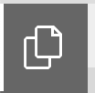
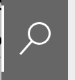
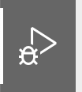
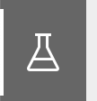

Setup Instructions
Hi and welcome to CS112! In order to complete and submit course assignments, you must complete the following setup instructions:
Should you encounter any troubles or have questions regarding setup, reach out to one of the TAs or post your question on EdStem!
Visual Studio Code
To edit code files for this course, you must install Visual Studio Code (also known as VSCode).
Step 1: Install
To install VSCode, open the link below that corresponds to your operating system, and follow the directions in the “Installation” section.
Step 2: Add line-length indicator (optional)
Long lines can make your code less readable, especially when reading it on smaller screens or when viewing two files side-by-side. We suggest using a maximum of 120 characters for each line of code that you write. VSCode can help you follow this guideline by adding a ruler to the editor display. To add this ruler, follow these steps:
-
Open Settings by selecting the following menus, depending on your platform:
- On Mac OS: Code > Preferences > Settings
- On Windows: File > Preferences > Settings
-
Search for
Editor: Rulersin the Settings tab to find the specific setting (pictured below).
-
Click the Edit in settings.json link.
-
In the newly-opened editor for settings.json, add
120between the brackets aftereditor.rulers(pictured below).
-
Save the settings.json file.
-
You should now see a vertical line at column 120, as pictured below:

Using Visual Studio Code
Here’s a handy guide to finding your way around Visual Studio Code:
Note: Use the .py file extension when saving your source files to indicate that these are Python source files.
You will need to use the terminal (also called command prompt) often. You may use the built-in Terminal or Command Prompt app, or you can use the built-in VSCode terminal. To access the VSCode terminal, select Terminal in the VSCode top menu, and then, in the dropdown menu that appears, select New Terminal.
Along the left-hand side of the VSCode window, you should see several buttons that open various sidebars, which allow you to open files, debug your code, manage VSCode extensions, etc. The icons you are shown may differ, depending on what other extensions you have installed, but they should contain at least the ones listed here. Following are short descriptions what each tab contains:

Explorer: Allows you to choose what folders and files to open. If no folder is open, clicking Open Folder will allow you to open a folder from your computer and show its files in this tab for easy access.
Search: Allows you to quickly search over all files in the currently opened folder. You can also open search by pressing ⇧⌘F.Source Control: This tab lets you interact with Git. Knowing and using Git is completely optional for this course.

Run and Debug: Displays all options relevant to running and debugging the program you are writing. You can also open this tab using the keyboard shortcut ⇧⌘D.Extensions: Allows you to download extensions for different languages and tools. The only extension necessary for this course is the Python extension, which you should have already installed.

Testing: You can run tests using this tab if test files are in the locations that it expects. Using this is entirely optional; assignments will direct you to run tests by runningpytest in the terminal.
Python
To work with Python in VSCode for this course, you must install and configure the correct Python version.
Step 1: Install Python
You must have a Python version from 3.7.x to 3.10.x (inclusive) installed for this course.
If you think you already have Python installed, check which version you have installed by running python3 --version in your terminal or command prompt. (You can open a terminal in VSCode by clicking Terminal > New Terminal.) If the Python version is in the range 3.7.x to 3.10.x (inclusive), move on to step 2!
Otherwise, follow the instructions here to download and install the correct version for your device. Please do not install versions outside the range specified previously as they will not work with the stencil code provided.
Step 2: Install the VSCode Python Extension
Next, add the Python extension to your VSCode installation. This extension allows for a better Python coding experience by supporting autocomplete, IntelliSense, debugging, and more. Follow the steps below to download the extension:
- Go to the Extensions tab on VSCode. This is located on the left hand side of the screen, and should look like this:
- Search for
Pythonin the Search Extensions… text box. - Click the Install button on the extension in the list that includes the word Pylance in the description (the first option in the following screenshot).

Once the extension is installed, proceed to step 3!
Step 3: Select the Python version in VSCode
Next, select the default version of Python on VSCode, or check that you have the right version selected:
On the bottom ribbon of the screen, you can see what version of the Python interpreter is currently selected in VSCode:

If the version shown does not match the version you found or installed in step 1, click the Python version indicator. You should see the version of Python installed in step 1 in a list as pictured below. Select this version to use it in VSCode. Remember: Use a Python version between 3.7.x-3.9.x (inclusive).

Step 4: Set up PyTest
Next, you will need to install PyTest, a Python package that allows you to write tests and see the results of your test cases.
First, check if you have pytest installed by running pytest --version in your terminal. If PyTest is correctly installed, it should display something matchingpytest 7.x.x.
If PyTest is not correctly installed, run pip3 install pytest. After it is installed, run pytest --version to check that everything works.
Using PyTest
Whenever writing test files, add import pytest at the top.
All of your tests must be contained within functions that begin with test_
To run your tests, run pytest [test file name]. You can also use python3 -m pytest [test file name] in your VSCode terminal.
Gradescope
We will be using Gradescope for assignment submission and grading. As Gradescope lacks support for anonymous grading, you will be creating an anonymous email account to sign up for Gradescope. You are required to complete the steps below, but if you have any security concerns relating to creating a new email account for this purpose, email us at cs0112headtas@cs.brown.edu for an exception to this policy.
These steps should be completed by 11:59pm Eastern Time on September 12 (when HW0 is due). You must tell us your anonymous email address in the appropriate question on HW0 once you’ve completed these steps; if you do not we will be unable to grade your assignments.
If you already have a Gradescope account with an anonymous email address, you are welcome to reuse it. Just be sure to enroll in cs0112 on Gradescope and submit HW0 to tell us what your email is.
Email Creation
First, create an anonymous ID using this link. Now, you’ll need to create a new email address with this ID as the username. This will make you anonymous to graders on Gradescope. To do this, carefully walk through the following steps. We recommend using an incognito window for this.
- Navigate to www.gmail.com.
- Make sure you are logged out of any other account and click “Create account” at the bottom.
- Fill out relevant details, and include your ID from above as the username. That is, your account should be <your anonymous ID here>@gmail.com. However, we will not see the name you use to create the email account, so you can use your real name here.
- If the account is already taken, generate a new anonymous ID and repeat the steps above.
- If prompted, enter a valid phone number to verify your account.
- Finish filling out the requested details and click “Next”.
Email Forwarding
You can set up email forwarding so that you don’t need to ever check this inbox. To do this, follow these steps (starting from your new Gmail inbox):
- Go into your inbox settings by clicking on the gear symbol in the upper-right of your inbox and then clicking on “Settings”.
- Navigate to the “Forwarding and POP/IMAP” tab.
- Click on “Add a forwarding address” at the top and choose an email of your choice.
- Go into that email inbox and copy the confirmation code to verify.
- Select the “Forward a copy…” radio button, and then click “Save changes” at the bottom.
Gradescope Account Setup
Here we will go through the steps of creating a Gradescope account and enrolling in our course. Even if you have used Gradescope before with your @brown.edu email, you need to create a new account for this class with your anonymous ID and email address. Again, if you already have a Gradescope account with an anonymous email, you can reuse it.
- Navigate to www.gradescope.com.
- Click “Sign Up” in the top right and sign up as a student.
- For the course entry code, write 7GE6J4.
- For the remaining fields enter your anonymous ID, email address, and anonymous ID respectively. Your name should not appear anywhere in your account information.
- Once you submit, your account is created, and you’re enrolled!
- Submit HW0 so that we can link your Gradescope account to your identity when we assign final grades!
Keep track of your ID as you will need it to sign in to your Gradescope account! You will be given a copy of your response to HW0 so you will always have your ID.
(Special thanks to Julia McClellan and the cs0220, cs1710, cs1730, and cs1260 TAs for the designing this anonymization system)